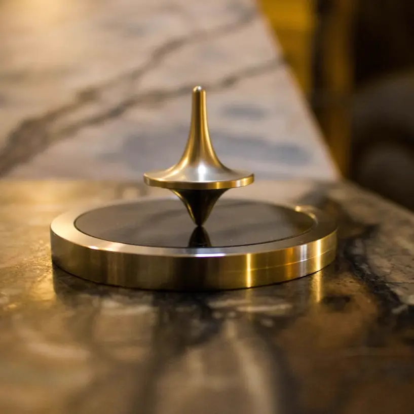
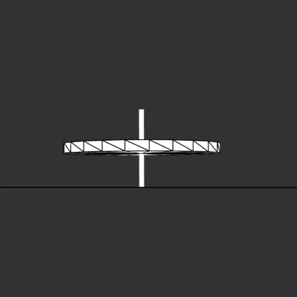
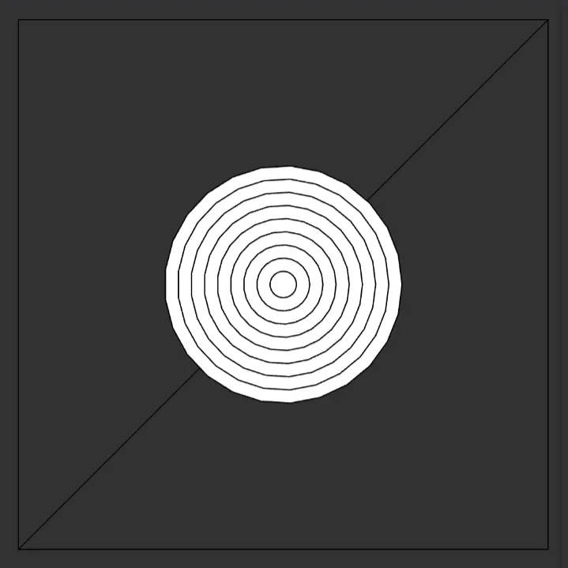
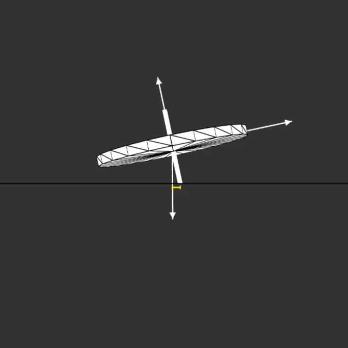
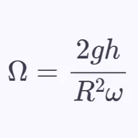

Reality
Idealization
Discretisation
Geometry
AlgebraDiscretisation
Imagine slicing the spinning top's heavy disc into a few thin concentric rings, like the rings of a tree trunk.
Instead of one solid mass, we treat each ring as having its own tiny mass \(\Delta m\) at a fixed distance \(r\) from the centre.
\[ I \approx \sum r^2 \,\Delta m \]